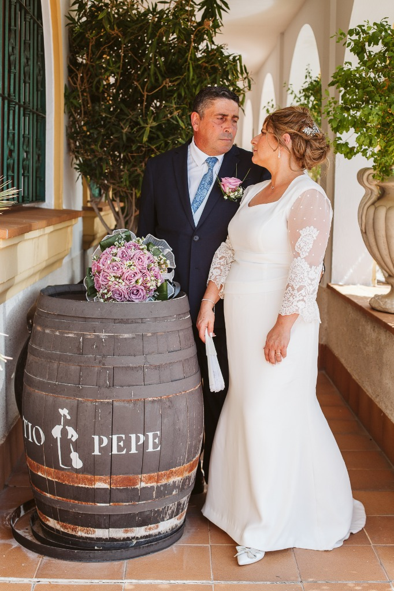
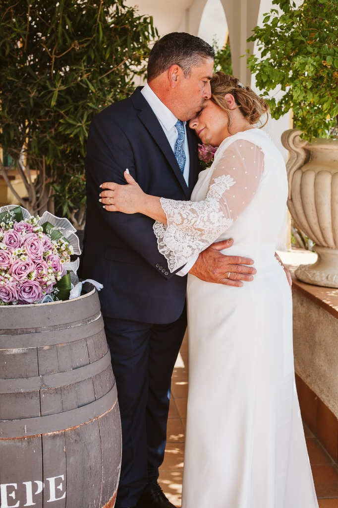
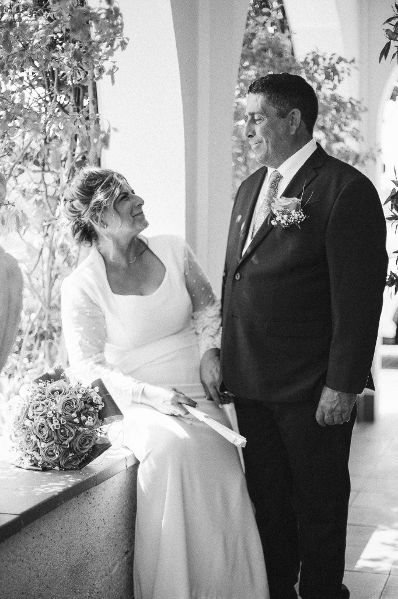
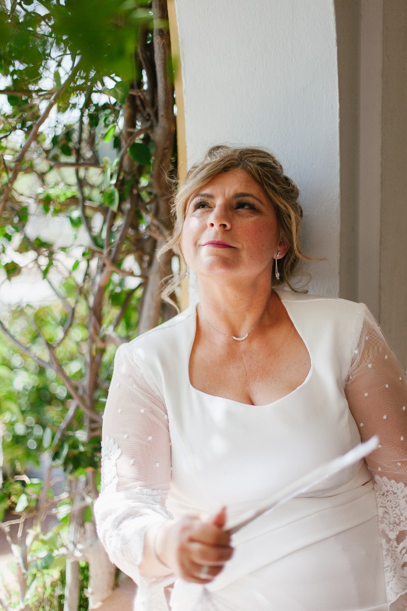
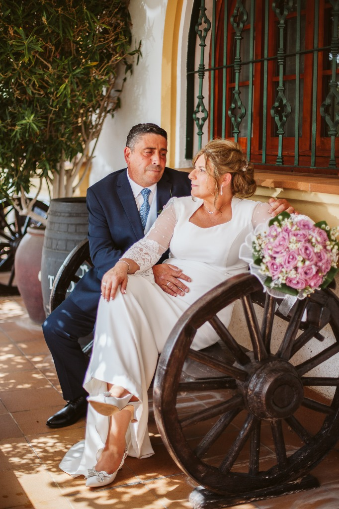

Celebrando 25 años de amor y compañerismo. Un reportaje íntimo y emotivo que captura la esencia de Servando y Paqui en sus Bodas de Plata, rodeados de recuerdos y mirando hacia el futuro con la misma ilusión del primer día.




